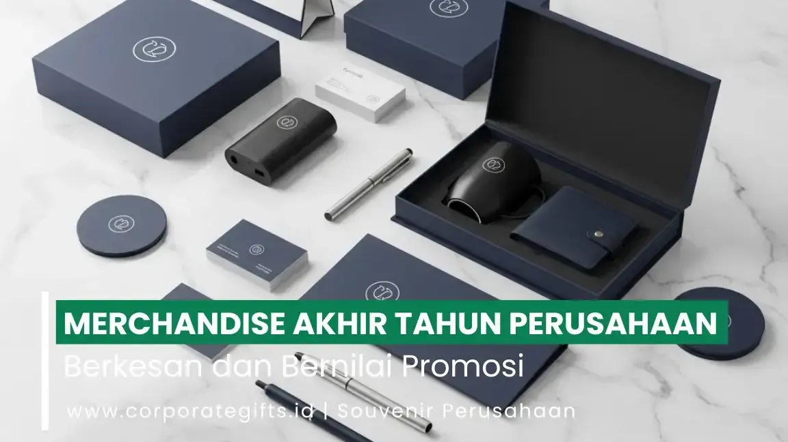

Corporate Gifts ID - Menjelang penutupan tahun fiskal, hampir seluruh organisasi bisnis mulai mengevaluasi pencapaian kerja sekaligus merancang strategi penyambutan tahun baru. Salah satu tradisi korporat paling strategis yang terbukti mampu menjaga loyalitas kemitraan adalah pemberian merchandise akhir tahun. Bingkisan cinderamata ini bukan sekadar hadiah seremonial belaka, melainkan representasi rasa syukur, bentuk apresiasi tulus atas kontribusi tim kerja, serta sarana mempererat relasi bisnis dengan klien prioritas.
Namun, menentukan pilihan merchandise perusahaan yang mampu menyeimbangkan alokasi anggaran, nilai kegunaan nyata, dan estetika visual brand bukanlah perkara sederhana. Memilih barang yang murah tanpa memperhatikan kualitas justru berisiko merusak citra profesionalisme yang telah dibangun sepanjang tahun.
Poin Kunci Merchandise Akhir Tahun Perusahaan:
- Investasi Retensi Relasi B2B: Hadiah akhir tahun memperkuat ikatan kemitraan dengan klien strategis dan membuka peluang kolaborasi bisnis yang lebih kokoh di tahun mendatang.
- Bentuk Pengakuan Kinerja Karyawan: Memberikan apresiasi nyata kepada staf internal mampu mendongkrak motivasi kerja dan rasa bangga terhadap perusahaan.
- Pergeseran Tren Menuju Produk Fungsional: Cinderamata yang digunakan dalam aktivitas harian, seperti tumbler berinsulasi vakum dan aksesoris teknologi, memberikan paparan logo brand yang tahan lama.
- Manajemen Waktu Pengadaan: Memesan cinderamata minimal 4 hingga 6 minggu sebelum akhir tahun sangat krusial untuk menghindari antrean produksi dan lonjakan biaya ekspedisi liburan.
Mengapa Merchandise Akhir Tahun Sangat Penting bagi Korporasi?
Ada landasan psikologis dan strategis yang kuat mengapa alokasi anggaran cinderamata penutup tahun selalu menjadi prioritas tim manajemen pemasaran serta divisi SDM (Human Resources):
1. Jembatan Emosional Penutup Tahun
Bagi karyawan, menerima paket merchandise eksklusif setelah setahun penuh mendedikasikan tenaga dan pikiran adalah bentuk validasi kerja yang sangat dihargai. Sementara bagi klien B2B, bingkisan akhir tahun menjadi sinyal profesional bahwa kerja sama yang terjalin selama ini dinilai sangat berharga oleh perusahaan Anda.
2. Pemasaran Berkelanjutan dengan Tingkat Retensi Tinggi
Berbeda dengan kartu ucapan digital yang hanya dibuka beberapa detik, produk cinderamata fisik yang fungsional akan diletakkan di atas meja kerja atau dibawa bepergian. Hal ini menciptakan paparan nama brand secara berulang (top-of-mind brand recall) sepanjang tahun berikutnya tanpa membebani biaya iklan tambahan.
3 Kategori Merchandise Akhir Tahun yang Paling Diminati
Berdasarkan tren kebutuhan korporasi di Indonesia, produk cinderamata penutup tahun dapat diklasifikasikan ke dalam tiga kategori utama:
1. Merchandise Fungsional Harian
Pilihan barang seperti tumbler stainless steel custom, tas tote bag kanvas tebal, atau buku agenda bersampul kulit sintetis selalu menjadi primadona. Barang-barang ini memiliki nilai guna tinggi sehingga penerima akan menggunakannya secara konsisten dalam rutinitas bekerja.
2. Merchandise Premium & Executive Gift Set
Ditujukan khusus untuk jajaran dewan komisaris, direksi mitra, atau investor utama. Paket ini memadukan pulpen metal berukir laser, desktop wireless charging pad, dan smart vacuum flask dalam balutan kemasan hardbox magnetik berdesain elegan dengan aksen hot foil emas atau perak.
3. Merchandise Ramah Lingkungan & Lifestyle Unik
Semakin banyak perusahaan multinasional yang menyelaraskan cinderamata mereka dengan prinsip keberlanjutan (ESG). Produk seperti kalender meja berbahan kertas daur ulang bersertifikasi FSC, peralatan makan bambu portabel, hingga lilin aromaterapi relaksasi menjadi simbol gaya hidup sehat dan kepedulian lingkungan yang modern.

Pilihan gift set merchandise akhir tahun mewah dengan kombinasi kemasan hardbox magnetik, pulpen metal grafir, dan aksesori meja kantor.
Tabel Matriks Pilihan Merchandise Berdasarkan Target Penerima
Agar anggaran perusahaan terserap secara optimal dengan dampak emosional maksimal, lakukan segmentasi hadiah penutup tahun sebagai berikut:
| Segmen Penerima | Rekomendasi Paket Produk | Karakteristik & Finishing | Sasaran Strategis |
|---|---|---|---|
| Klien VIP & Dewan Direksi | Executive Gift Box: Smart Tumbler, Pen Parker, Wireless Charger | Hardbox beludru, grafir laser nama, aksen gold foil | Mengukuhkan relasi strategis jangka panjang |
| Mitra Bisnis & Vendor Rekanan | Desk Set: Kalender Kayu, Buku Agenda Kulit, Mug Keramik Doff | Elegan, fungsional meja kantor, sablon presisi | Mempererat sinergi operasional tahun depan |
| Karyawan Internal Kantor | Appreciation Kit: Jaket Hoodie Custom, Tumbler Stainless, Tote Bag | Nyaman dipakai, kasual modern, bordir komputer rapi | Meningkatkan rasa memiliki dan loyalitas tim |
| Konsumen / Pelanggan Loyal | Year-End Pack: Kalender Dinding, Pouch Serbaguna, Pulpen Stylus | Praktis, biaya efisien, visual logo berdaya ingat tinggi | Mendongkrak retensi transaksi dan loyalitas brand |
Keterangan: Seluruh pilihan kombinasi isi paket merchandise dan desain kemasan hardbox dapat disesuaikan secara fleksibel sesuai anggaran resmi pengadaan perusahaan Anda.
Faktor Penting yang Wajib Diperhatikan Sebelum Memesan
Proses pengadaan cinderamata akhir tahun memiliki dinamika tersendiri dibanding pengadaan rutin biasa. Perhatikan faktor-faktor berikut:
- Timeline dan Lead Time Produksi: Bulan November dan Desember adalah periode tersibuk bagi industri percetakan dan konveksi. Memulai pemesanan sejak bulan Oktober memberikan ruang aman untuk revisi desain sampel fisik (dummy) serta mencegah keterlambatan distribusi.
- Penetapan Alokasi Anggaran Berjenjang: Tentukan batas anggaran per unit berdasarkan segmentasi penerima agar kas perusahaan tetap terkendali tanpa mengorbankan kualitas pada tier VIP.
- Standar Kontrol Kualitas Produk: Pastikan material kain tidak mudah luntur, bahan tumbler memenuhi standar food grade SUS 304 anti-karat, dan sambungan jahitan tas rapi serta kuat menahan beban.
- Konsistensi Penerapan Panduan Merek (Brand Guidelines): Logo korporat harus dicetak dengan ketelitian warna yang presisi sesuai kode Pantone resmi perusahaan, tanpa distorsi proporsi grafis.
Tips Praktis agar Hadiah Akhir Tahun Lebih Berkesan dan Bernilai
Sentuhan detail kecil sering kali menjadi pembeda antara cinderamata biasa yang terlupakan dengan hadiah eksklusif yang dibanggakan penerima:
- Sertakan Kartu Ucapan Personalisasi: Kartu ucapan terima kasih dengan tanda tangan basah pimpinan perusahaan menghadirkan sentuhan hangat yang sangat dihargai oleh penerima.
- Perhatikan Pengalaman Membuka Kotak (Unboxing Experience): Gunakan pita satin berembos logo, kertas peredam sarang lebah (honeycomb wrapping) ramah lingkungan, serta stiker segel yang rapi.
- Ukiran Nama Khusus (Name Personalization): Menambahkan nama individu penerima pada badan pulpen metal atau botol tumbler memberikan rasa eksklusivitas pribadi yang tak ternilai.
Kesimpulan
Merchandise akhir tahun perusahaan adalah sarana investasi reputasi yang menjembatani rasa terima kasih atas kerja sama masa lalu dengan optimisme kesuksesan di masa depan. Melalui kurasi produk yang tepat, kemasan berkelas, serta waktu produksi yang terencana rapi, cinderamata akhir tahun akan menjadi simbol prestise yang membanggakan bagi seluruh pihak yang menerimanya.
Siap merencanakan pengadaan merchandise akhir tahun kantor Anda dengan kualitas premium dan garansi pengerjaan tepat waktu? Hubungi tim konsultan CorporateGifts.ID sekarang juga untuk mendapatkan katalog produk terlengkap dan layanan pembuatan mockup logo gratis.